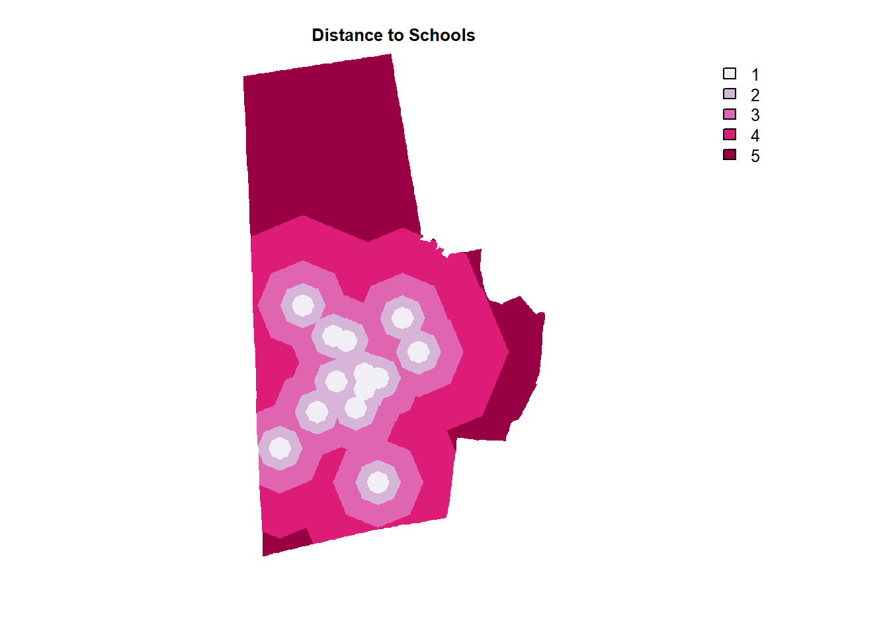
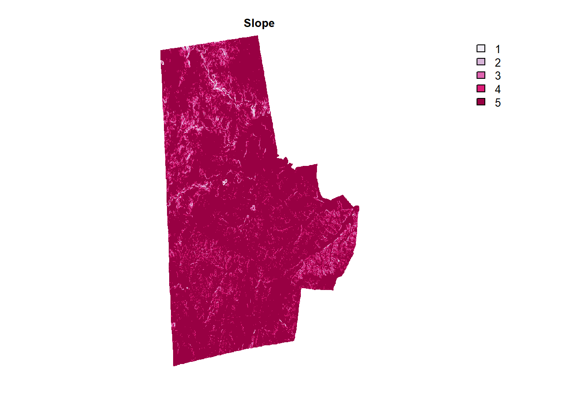
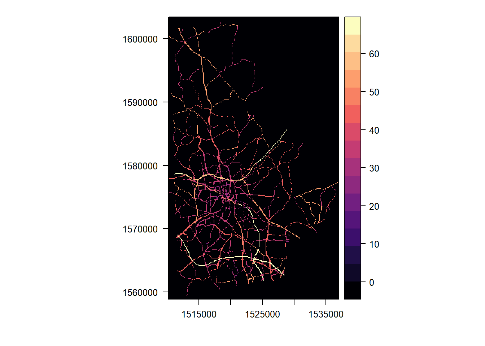
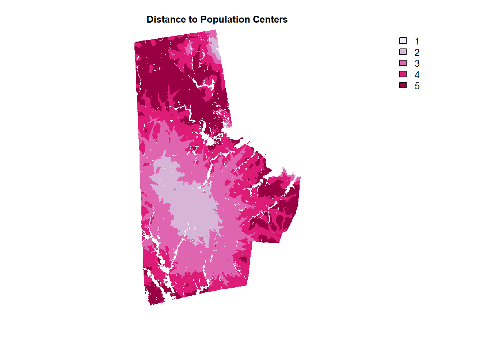

0.4 Land Suitability for Locating a Landfill
There are no accepted conventions for identifying the appropriate locations of landfills. Locating one, is a contentious topic, as it is a Locally Unwanted Land Use (LULU). Furthermore, there are many regulatory agencies that are involved in regulating the landfill locations including the Environmental Protection Agency.
{{% callout alert %}}
Nothing in this tutorial is an endorsement of particular criteria used for site selection purposes. This is to be treated as an in-class exercise and caution should be used to interpret the results.
{{% /callout %}}
In this example, I am going to use 4 arbitrary criteria
- Distance to Schools. (Farther the better)
- Distance to Parks. (Farther the better)
- Slope (Flatter the better)
- Distance to population centres (Sufficiently far, but no further)
But first set up the project crs by setting it to the crs of the land use raster and also create a template raster, by taking the extent and projection from a land use raster and setting every value to 0.
library(terra)
library(rasterVis)
library(here)
library(tidyverse)
library(fasterize)
library(sf)
lu_raster <- here("tutorials_datasets", "landsuitability", "c11_37063.img") %>% rast
template_raster <- classify(lu_raster, cbind(0, 100, 0), right=FALSE) %>% raster::raster() #fasterize works with raster object instead of spatRaster object. Hence the conversion
project_crs <- crs(lu_raster)
vector_read_fn <- function(x){
if(file.exists(x)){
temp1 <- st_read(x, quiet=TRUE) %>% st_transform(project_crs)
return(temp1)
}
}0.4.1 Distance to Schools & Parks
The workhorse functions are gridDistance and classify both from the terra package.
gridDistance is a function that calculates the distance to cells of a SpatRaster when the path has to go through the centers of neighboring raster cells. This is effectively like buffering at multiple distances.
Xlassify is a function that (re)classifies groups of values to other values. For example, all values between 0 and 1000 become 1, and all values between 1000 and 2000 become 2 in the following code. In particular, see the rcl matrix argument in ?classify
schools <- here("tutorials_datasets", "landsuitability", "NCDurhamSchools", "SchoolPts.shp") %>% vector_read_fn()
schools_raster_dist <- schools %>%
st_buffer(10) %>% # Fasterize only works with polygons, so we create tiny buffers around the points
fasterize(raster= template_raster, background = 0) %>%
rast %>% # Converting to SpRaster.
gridDistance(target=1) %>% # Check ?fasterize especially the `field argument on why target is 1.
mask(lu_raster) %>%
classify(rcl = matrix(c(0,1000,1, 1000,2000,2, 2000,4000,3, 4000,8000,4, 8000,Inf,5), ncol=3, byrow = T), include.lowest =T, right = F)Similar approach can be taken to distance to parks. Here we have three different types of parks, including easement. We just select the geometry and treat them all the same. There is no need to buffer them, because they are already polygons.
parks <- here("tutorials_datasets", "landsuitability", "NCDurhamParksTrailsGreenways", "Parks.shp") %>% vector_read_fn() %>% dplyr::select(geometry)
future <- here("tutorials_datasets", "landsuitability", "NCDurhamParksTrailsGreenways", "Future_Parks.shp") %>% vector_read_fn() %>% dplyr::select(geometry)
easements <- here("tutorials_datasets", "landsuitability", "NCDurhamParksTrailsGreenways", "GreenwayEasementParcels.shp") %>% vector_read_fn() %>% dplyr::select(geometry)
parks_and_others <- reduce(list(parks, future, easements), rbind)
rm(parks, future, easements)
parks_others_raster_dist <- parks_and_others %>%
fasterize(raster= template_raster, background =0) %>%
rast() %>%
gridDistance(target=1) %>%
mask(lu_raster) %>%#Create a new Raster* object that has the same values as x, except for the cells that are NA (or other maskvalue) in a 'mask'.
classify(rcl = matrix(c(0,500,1, 500,1000,2, 1000,2000,3, 2000,4000,4, 4000,Inf,5), ncol=3, byrow = T), include.lowest=T, right = FALSE)Visualise them using the following code
library(RColorBrewer)
schools_raster_dist %>% plot(col=brewer.pal(5, "PuRd"), type = "classes", axes=F, main = "Distance to Schools")
parks_others_raster_dist %>% plot(col=brewer.pal(5, "PuRd"), type = "classes", axes =F, main = "Distance to Parks")0.4.2 Slope
Fortunately to calculate slopes in the US, there is an excellent package called elevatr that downloads the USGS Digital elevation model. USGS Digital elevation models (DEMs) are arrays of regularly spaced elevation values.
Once we acquire the raw elevation data, we can use the terrain function to create the slope raster.
Note the use of resample to make sure that the slope data that conforms to the extent, dimensions and resolution of the original land use dataset.
library(elevatr)
durham_slope <- get_elev_raster(template_raster, z = 11) %>% rast() %>%
terrain(v="slope", unit="degrees") %>%
resample(lu_raster, method= "bilinear") %>%
mask(lu_raster) %>%
classify(rcl = matrix(c(0,5,5, 5,7,4, 7,10,3, 10,13,2, 13,Inf,1), ncol=3, byrow = T), include.lowest=T)
durham_slope %>% plot(col=brewer.pal(5, "PuRd"), type = "classes", axes =F, main = "Slope")
0.4.3 More Complicated Distance Calculations
In this subsection, I am going to demonstrate how to use more complicated network distance calculations, instead of a geographic distance that we used earlier. We are going to use gdistance package by Jacob Van Etten. It is useful to peruse the vignette for the package. Remember raster can be treated as a network/graph that is mostly regular (except at the corners of the raster). Then the problem is simply finding the shortest route on the graph if the we can assign costs to the edges.

To do this, we take advantage of the highway network and its attributes. There is a SPEED_LMT, which we will treat as the speed to traverse that link. The LANES attribute can be used to construct the width of the road and then use it to construct the raster.
library(gdistance)
highways <- here("tutorials_datasets", "landsuitability", "Roads", "Roads.shp") %>%
vector_read_fn() %>%
filter(func_class != "Local Roads") %>%
mutate(LANES = as.numeric(as.character(LANES)),
SPEED_LMT = as.numeric(as.character(SPEED_LMT)),
bufferwidth = ifelse(is.na(LANES), 30, LANES * 30/2)
)%>%
st_buffer(dist = .$bufferwidth) %>%
fasterize(template_raster, field = "SPEED_LMT", fun='max')
highways[is.na(highways)] <- 0
levelplot(highways, margin = FALSE)
highways <- rast(highways)For the rest of the raster that are not covered by highways, we arbitarily assign a speed based on land cover class. In this instance, we assign of 15mph to developed cells and 5 mph to cells that are forests and other land covers. We also make water, wetlands impassable by assigning them NA speed. We take advantage of the fact that
National Land Cover Dataset has two digit code, which the first digit representing a higher landuse type (Water, Developed etc.). Hence, the integer division by 10 using floor() discarding the remainder.
speed_raster <- floor(lu_raster / 10) %>%
classify(rcl = matrix(c(1,NA, 2,15, 3,5, 4,5, 5, 5, 6,5, 7,5, 8,5, 9, NA), ncol=2, byrow=T))
combined_speed_raster <- max(speed_raster, highways)
p1 <- levelplot(raster(highways), margin = FALSE, main ='Speed on Roads')
p2 <- levelplot(raster(combined_speed_raster), margin=FALSE, main = "Speed on all cells")
library(gridExtra)
grid.arrange(p1,p2, ncol=2)Exercise
- Feel free to experiment with other speeds based on other datasets.
In gdistance package, the edge weights on the neighbor graph are stored using a conductance framework (instead of a resistance) and the key concept is a transition matrix. It is stored as a sparse matrix. It is essentially captures which two cells are connected and how much conductance is there between the two cells. It is useful to work through some toy examples to understand how to construct the appropriate transition matrix.
{{% callout alert %}}
As of writing this tutorial, gdistance and rastervis does not seem to work very well with SpatRaster but only with rasters from Raster package. Convert and reconvert as necessary.
{{% /callout %}}
Trmatx <- transition(1/(raster(combined_speed_raster)*0.44704) , function(x){1/mean(x)}, 8, symm=TRUE) %>%
geoCorrection # 0.44704 is conversion between mph and m/sIn this example, I am going to use population centres as defined high population density and high population and calculate the network distance to these centres for each pixel in the raster. I am arbitrarily setting that being 1200s is ideal and deviation in either direction is penalised. As usual, I am categorizing the distance raster.
library(units)
#library(tidycensus) # In Oct 2022, the census website was down.
#durham_blk <- get_decennial(geography = "block", variables = "P001001", state = "NC", county = "Durham", geometry = T, year = '2010') %>%
# st_transform(crs=project_crs) %>%
# mutate(popdens = value/(st_area(.) %>% set_units(km^2)))
durham_blk <- here("tutorials_datasets", "landsuitability", "Blocks", "2010_Census_Blocks.shp") %>% # This is all NC blocks
st_read() %>%
mutate(county_fips = str_sub(geoid10, start = 1L, end = 5L)) %>%
filter(county_fips == "37063") %>% # Durham FIPS code
st_transform(crs=project_crs) %>%
mutate(popdens = total_pop/(st_area(.) %>% set_units(km^2)))
pop_concentrations <- durham_blk %>%
filter(popdens>set_units(10000, 1/km^2) & total_pop > 300) %>% # Arbitrarily picking 10,000 people/km^2 and 300 people as thresholds
st_centroid()
dist_popcenters_raster <- accCost(Trmatx, pop_concentrations %>% as_Spatial()) %>%
raster::calc(function(x){ceiling(5-(abs(x-1200)/300))}) %>% # These are functions in raster not terra. Only using this because acCost gives raster not SpatRaster
raster::clamp(lower=1, upper=5, useValues=FALSE) %>%
rast()Exercise
- Convert output from
accCostinto a SpatRaster and use functions for terra to achieve the same result.
dist_popcenters_raster %>%
mask(lu_raster) %>%
plot(col=brewer.pal(5, "PuRd"), type = "classes", axes =F, main = "Distance to Population Centers")
Exercise
Boolean (0-1/T-F) rasters have special meaning and arithmetic operations with boolean rasters are effectively boolean algebra. Sum of two boolean rasters is ‘OR’ and product of two boolean rasters is
AND. Why?Use these features of Boolean rasters to effectively remove cells from consideration as alternatives to speed up processing. For example, a landfill may not be located on land that is already developed.